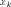
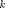
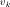
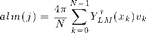
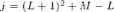
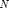

pix2alm
Find spherical harmonic decomposition of function on sphere
Contents
Syntax
alm = pix2alm(v) alm = pix2alm(v, lmax)
Input Arguments
v array of pixel values lMax (optional) max order of harmonic to calculate
nPix = numel(v), with nPix = 12*nSide^2 for nSide a power of 2. lMax defaults to 2*floor(nSide/3)
Return Arguments
alm coefficients of spherical harmonic expansion
Description
Let  denote the location of pixel  and  the function value at . Then

where  and  is the number of pixels (12*nSide^2)
Example
estimate alm of dummy data
ns = 2^4; np = 12*ns^2; v = ylm(ns,1,1) + ylm(ns,2,-2) + ylm(ns,3,0) + rand(1,np)/10; lMax = 4; alm = pix2alm(v,lMax); for L = 0:3 fprintf('L = %d: ',L); fprintf('%7.3f ',abs(alm((L+1)^2+(-L:L)-L))); fprintf('\n'); end
L = 0: 0.176 L = 1: 0.001 0.002 1.000 L = 2: 1.001 0.002 0.001 0.002 0.003 L = 3: 0.003 0.003 0.002 0.998 0.002 0.003 0.003
See also
alm2pix
Requires
ylm
Copyright 2010-2011 Lee Samuel Finn. Terms of Use.